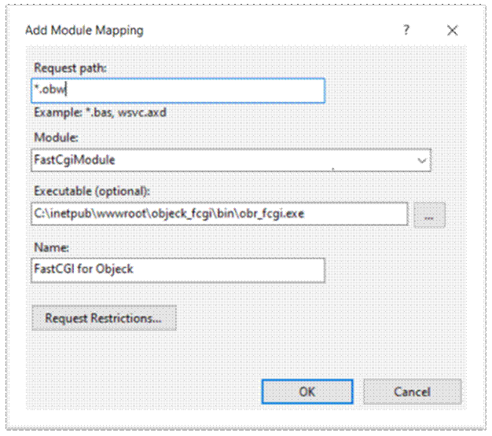

v5.3.8 (August 8, 2020)
Bug fixes.
Highlights:
1. Fixed type checking bugs for generics (bug)
Please refer to the project website for additional information about the language. The Programmer’s Guide is located the “doc” directory. Additional examples are available on the Rosetta Code website. Please submit bugs to objeck@gmail.com, bug reports are greatly appreciated!
New developers please refer to getting starting guide.
bin/ – FastCgi VM
apps/ – source code examples
lib/ – supporting language libraries
lib/native/ – native OS shared libraries
Minor improvements.
Highlights of this release include the following:
1. Updates to the HttpClient and HttpsClient classes
2. Added 'GetCert' method to the TCPSecureSocket and HttpsClient classes
Please refer to the project website for additional information about the language. The Programmer’s Guide is located the “doc” directory. Additional examples are available on the Rosetta Code website. Please submit bugs to objeck@gmail.com, bug reports are greatly appreciated!!
Steps:
· Install IIS with the following modules:
a. Defaults
b. Application Development Features / CGI
c. Application Development Features / ISAPI Extensions
d. Application Development Features / ISAPI Filters
· Copy the Objeck “objeck_fcgi” directory to IIS “inetpub\wwwroot”
· Copy *.obw to “inetpub\wwwroot \objeck_fcgi\apps”
· Open “IIS Manager”
a. Click on “FastCGI Setting” and “Add Application”
i. Add “obr_fcgi.exe”
ii. Click on “Endowment Variables” and “Add”
iii. Set FCGI_CONFIG_PATH to the location of the web app (*.obw)
· On the right navigation click on “Sites”, “Default Web Site”, “Handler Mapping”
· Click on “Add Module Mapping”

· Click on “Request Restrictions”, “Access” and “None”
· Exit and click on “Yes”
· Restart IIS
Steps:
· Install Apache and FastCGI:
· sudo apt-get install libapache2-mod-fastcgi apache2-MPM-worker libfcgi-dev uuid-dev
· Add the entry below to the: “/etc/apache2/mods-enabled/fastcgi.conf” file:
|
<IfModule mod_fastcgi.c> AddHandler objeck-lang .objk FastCgiServer /var/www/html/objeck_fcgi/bin/obr_fcgi -initial-env FCGI_CONFIG_PATH=/var/www/html/objeck_fcgi/hello.obw -idle-timeout 60 -processes 1 ScriptAlias /objk "/var/www/html/objeck_fcgi/bin/obr_fcgi" </IfModule> |
Few tips to make FastCGI easier to work with:
· Use the “Sytem.IO.File.Logger” class for debugging
· If you’d like your web app to connect to a database using ODBC setup a 32-bit ODBC data source as admin.
For OS X (10.9 or greater), you’ll need to install OpenSSL in order to use encryption APIs as well as ODBC to enable database support. Please refer to the following link for OpenSSL directions and this link for about ODBC support.
The Objeck source repository is located here and the source can be fetch using the following command GIT command:
· mkdir objeck
· cd objeck
· git init
· git clone https://github.com/objeck/objeck-lang.git
· On Windows, the ODBC driver must be a 32-bit driver for compatibility.
· Some Redhat based Linux distributions may report errors about heap buffer execution. This is triggered by the JIT compiler’s execution of generated machine code. To resolve this issue please consult the Fedora error console.
· The XML parser class does not support DTDs or DOCTYPE tags
· By design, the regular expression class performs greedy pattern matching.
· All unit tests executed successfully but I'm sure there are some bugs. Send an e-mail we’ll get them sorted.